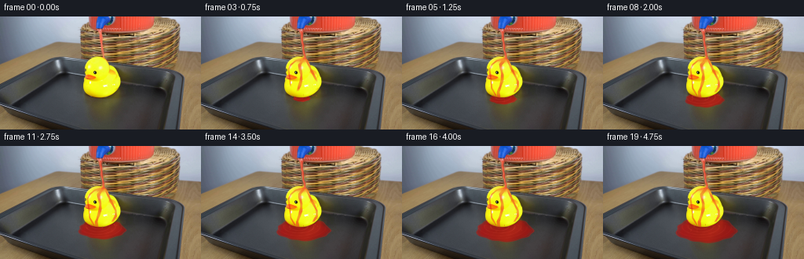
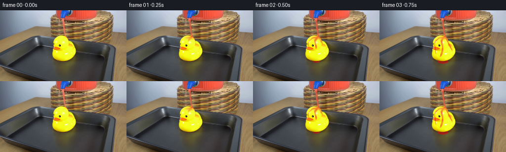

CODING AGENTS AS PIXEL WORLD MODELS
traex/GPT-6.1-Sol · 0087
点击播放 · 原生 RGB 像素
逐轮保存的候选
回放视频、检查图与代码变化。
每份候选均可单独播放。实际图片检查记录在下方工具轨迹中。
候选 01播放与检查图
点击播放 · 原生 RGB 像素


展开代码变化
--- 上一保存版本
+++ 本次保存版本
@@ -0,0 +1,165 @@
+from pathlib import Path
+import numpy as np
+from PIL import Image, ImageDraw
+from scipy.ndimage import gaussian_filter
+import cv2
+import artifact_io
+
+ROOT = Path(__file__).resolve().parent
+W,H,S=256,144,3
+original=np.asarray(Image.open(ROOT/'first_frame.png').convert('RGB'))
+f0=original.astype(np.float32)
+y0,x0=np.mgrid[:H,:W]
+# Only the narrow already flowing column is replaced; the apparatus is untouched.
+cent=127.35 + .105*(y0-21) + .0022*(y0-28)**2
+old=((y0>=20)&(y0<=51)&(abs(x0-cent)<2.85)).astype(np.uint8)*255
+clean=cv2.inpaint(original,old,3,cv2.INPAINT_TELEA).astype(np.float32)
+Y,X=np.mgrid[:H*S,:W*S].astype(np.float32)
+X=(X+.5)/S-.5;Y=(Y+.5)/S-.5
+base=np.repeat(np.repeat(f0,S,axis=0),S,axis=1)
+clean_delta=np.repeat(np.repeat(clean-f0,S,axis=0),S,axis=1)
+outline=[(119,50.4),(128,50.6),(132,52.2),(135,55),(137.4,58.5),(138.8,61.2),(143,63.4),(146.8,66.5),(150,73.2),(152.8,79.5),(153.1,86),(151.6,89),(148.8,93.5),(144.6,97.4),(138.5,100.3),(132,102.4),(123.3,102.8),(116.5,101),(111.8,98.9),(108.5,95.6),(106,90.4),(105.8,86),(106.9,81),(107.2,79),(104,78.2),(103,75.4),(108.1,73.8),(108.1,70),(107.3,68),(108.2,66),(107.3,63.5),(109,59.6),(111.4,56),(114.7,53.4)]
+m=Image.new('L',(W*S,H*S));ImageDraw.Draw(m).polygon([(round((x+.5)*S),round((y+.5)*S)) for x,y in outline],fill=255)
+duck=np.asarray(m).astype(np.float32)/255
+# Subpixel edge blending, respecting the original outline and dark eye.
+duck=gaussian_filter(duck,.55)
+tray=(1-duck)*(Y>72)
+
+def mix(a,c,mask):
+ mask=np.clip(mask,0,1)[...,None]
+ return a*(1-mask)+np.asarray(c,dtype=np.float32)*mask
+
+def path_distance(points):
+ best=np.full_like(X,1e5)
+ for (ax,ay),(bx,by) in zip(points[:-1],points[1:]):
+ u=np.clip(((X-ax)*(bx-ax)+(Y-ay)*(by-ay))/((bx-ax)**2+(by-ay)**2),0,1)
+ d=np.hypot(X-ax-u*(bx-ax),Y-ay-u*(by-ay))
+ best=np.minimum(best,d)
+ return best
+
+# Surface run-off is guided around the curved head and down the rubber body.
+rivulets=[([(131.9,52),(129,56),(125,61),(125.8,67),(127.3,73),(127,81),(125,88),(122,96),(123,103)],1.9,.74),
+ ([(130,53),(120,56),(114,61),(111,67),(112,74),(113,82),(113.8,91),(119,100)],.95,.69),
+ ([(133,54),(136,60),(139,66),(143,74),(147,82),(147,89),(142,97),(132,103)],1.45,.7)]
+distances=[path_distance(p) for p,_,_ in rivulets]
+
+rng=np.random.default_rng(824)
+# Short-lived beads and low splashes from the impact and the body runoff.
+particles=[]
+for birth in np.arange(.10,5,.115):
+ for j in range(2):
+ sgn=-1 if j==0 else 1
+ particles.append((birth,131.5,53.8,sgn*rng.uniform(12,25),rng.uniform(-24,-10),rng.uniform(.23,.62),rng.uniform(.28,.48)))
+for birth in np.arange(.6,5,.15):
+ for j in range(2):
+ particles.append((birth,117 if j==0 else 144,100,-rng.uniform(10,23) if j==0 else rng.uniform(10,23),rng.uniform(-15,-5),rng.uniform(.3,.75),rng.uniform(.25,.45)))
+
+
+def render(t):
+ onset=1-np.exp(-t*7)
+ a=base+clean_delta*onset
+ # Conserved accumulating pool, a shallow perspective ellipse with a wet meniscus.
+ volume=max(0,t-.22)
+ rx=3+43*(1-np.exp(-volume/2.55))
+ ry=1.1+18*(1-np.exp(-volume/2.6))
+ cy=102.7+4.7*(1-np.exp(-volume/2.2))
+ cx=127.5+.75*volume
+ u=(X-cx)/rx;v=(Y-cy)/ry
+ theta=np.arctan2(v,u)
+ irregular=1+.035*np.sin(5*theta+.4)+.022*np.sin(9*theta+1.8)+.012*np.sin(13*theta)
+ radius=np.hypot(u,v)/irregular
+ coverage=np.clip((1-radius)*min(rx,ry)*S+0.45,0,1)*tray*np.clip(volume*8,0,1)
+ thick=np.clip((1-radius)*6,0,1)
+ # Preserve diffuse and rubber reflections through the red transparent liquid.
+ light=base.mean(axis=2)
+ reflection=np.clip((base[...,0]+base[...,1]-2*base[...,2])/170,0,1)
+ color=np.empty_like(base)
+ color[...,0]=107+.64*light+13*thick+18*reflection
+ color[...,1]=13+.09*light+14*reflection
+ color[...,2]=12+.07*light+3*reflection
+ rip=.5+.5*np.sin(np.hypot((X-124)*.72,(Y-102)*1.65)*1.13-t*13)
+ ripple=(rip**14)*np.exp(-((X-128)/29)**2-((Y-104)/14)**2)*(Y>100)
+ color+=ripple[...,None]*np.array([18,9,7])
+ a=mix(a,color,coverage*(.57+.31*thick))
+ meniscus=np.exp(-((radius-.979)*min(rx,ry)/.22)**2)*coverage
+ a=mix(a,[191,61,48],meniscus*.27)
+ # Weak reflected highlights following the shallow ripples rather than drawn rings.
+ glint=ripple*coverage*.08*(.5+.5*np.sin(X*.6+Y*.4))
+ a=mix(a,[246,176,144],glint)
+
+ # Thin, uneven moving red film. Most of the duck remains yellow.
+ front=52+56*np.clip((t-.10)/.88,0,1)
+ wet=np.zeros_like(X)
+ for j,((pts,width,opacity),dist) in enumerate(zip(rivulets,distances)):
+ movingwidth=width*(.9+.15*np.sin(Y*.32-t*9+j*2)+.06*np.cos(Y*.74+t*6))
+ movingfront=front-(j*6)
+ mask=np.clip((movingwidth-dist)/.48+.5,0,1)
+ mask*=np.clip((movingfront-Y)/2+.5,0,1)
+ pulse=.85+.15*np.sin(Y*.44-t*10+j)
+ wet=np.maximum(wet,mask*opacity*pulse)
+ cap=np.exp(-((X-128.3)/8.0)**2-((Y-55.6)/3.1)**2)*.58
+ wet=np.maximum(wet,cap*np.clip(t*6,0,1))*duck*onset
+ # Preserve eye and original molding highlights under the translucent runoff.
+ eye=np.exp(-((X-120.8)/2)**2-((Y-71.2)/2.6)**2)
+ wet*=1-.90*eye
+ yellowlight=base[...,1]/255
+ film=np.empty_like(base)
+ film[...,0]=206+36*yellowlight
+ film[...,1]=30+42*yellowlight
+ film[...,2]=17+19*yellowlight
+ spec=np.clip((base[...,2]-45)/125,0,1)
+ film+=spec[...,None]*np.array([8,40,36])
+ a=mix(a,film,wet)
+ # Slender moving highlights in the main wet rivulet.
+ highlight=np.exp(-((distances[0]-.55)/.22)**2)*wet*.10*(.5+.5*np.sin(Y*.7-t*13))
+ a=mix(a,[255,160,98],highlight)
+ # Runoff beads leave the lower edge and fall into the tray.
+ for j,x in enumerate((119.5,130,142)):
+ q=((t-.3)*3.8+j*.31)%1
+ yy=99.5+9*q*q
+ bead=np.exp(-(((X-x)/.63)**2+((Y-yy)/(.9+.3*q))**2)*2)
+ a=mix(a,[209,51,30],bead*.72*np.clip((t-.5)*5,0,1))
+
+ # Continuous gravity jet already present in frame zero.
+ cyjet=127.25+.110*(Y-20)+.0020*(Y-29)**2
+ cyjet+=.26*np.sin(Y*.44-t*11)+.13*np.sin(Y*.91-t*17)
+ width=(1.44-.012*(Y-20))*(1+.12*np.sin(Y*.57-t*16))
+ dx=X-cyjet
+ jet=np.clip((width-abs(dx))/.50+.5,0,1)
+ jet*=np.clip((Y-18.3)*2,0,1)*np.clip((53.5-Y)*1.4,0,1)
+ core=np.exp(-((dx+.35)/.47)**2)
+ jcolor=np.empty_like(base)
+ wave=np.sin(Y*.9-t*20)
+ jcolor[...,0]=226+15*core+5*wave
+ jcolor[...,1]=64+65*core+6*wave
+ jcolor[...,2]=42+51*core+4*wave
+ a=mix(a,jcolor,jet*onset*.94)
+ # The compact glossy impact patch follows the head surface.
+ impact=np.exp(-((X-131)/2.3)**2-((Y-53.4)/1.3)**2)*duck
+ a=mix(a,[247,100,56],impact*.55*onset)
+ for birth,px,py,vx,vy,r,life in particles:
+ dt=t-birth
+ if not 0<dt<life:continue
+ xx=px+vx*dt; yy=py+vy*dt+72*dt*dt
+ if yy>114 or xx<82 or xx>181:continue
+ # Sharp small colored beads with slightly elongated motion-blurred shape.
+ drop=np.exp(-2*(((X-xx)/r)**2+((Y-yy)/(r+.12+abs(vy+144*dt)*.005))**2))
+ a=mix(a,[228,64,41],drop*.74)
+ gl=np.exp(-3*(((X-xx+.10)/(r*.45))**2+((Y-yy+.15)/(r*.4))**2))
+ a=mix(a,[255,172,130],gl*.22)
+ return a
+
+
+def main():
+ frames=[original.copy()]
+ for i in range(1,20):
+ # Brief shutter exposure at constant frame rate, while all solid objects stay fixed.
+ t=i/4
+ a=(render(t-.016)+render(t+.016))*.5
+ difference=(a-base).reshape(H,S,W,S,3).mean(axis=(1,3))
+ frames.append(np.clip(np.rint(f0+difference),0,255).astype(np.uint8))
+ frames=np.stack(frames)
+ artifact_io.save(frames,ROOT)
+ assert np.array_equal(frames[0],original)
+
+if __name__=='__main__': main()
可观测工具轨迹
实际执行的命令与返回图片。
命令 1exit 0
/bin/bash -lc 'ls -la && cat prompt.txt && cat GENERATION_RULES.md'
命令 2exit 0
/bin/bash -lc "cat artifact_io.py && python - <<'PY'
from PIL import Image
import numpy as np
im=np.array(Image.open('first_frame.png').convert('RGB')); print(im.shape)
# ascii map each 4x4 block colors
chars=[]
for y in range(0,144,3):
s=''
for x in range(0,256,3):
r,g,b=im[y:y+3,x:x+3].mean((0,1))
if r>g*1.45 and r>b*1.5: c='R'
elif r>140 and g>110 and b<100: c='Y'
elif max(r,g,b)-min(r,g,b)<15: c=' ' if r>210 else ('.' if r>150 else ':' if r>100 else '+' if r>50 else '#')
elif b>r*1.15 and b>g*1.05: c='B'
elif r>g*1.15 and g>b*1.15: c='o'
else:c='-'
s+=c
print(f'{y:3d} '+s)
PY"命令 3exit 0
/bin/bash -lc "python - <<'PY'
from PIL import Image
import numpy as np
im=np.array(Image.open('first_frame.png').convert('RGB'))
# Print more useful colors named by thresholds, blocks 2 pixels
for y in range(0,112,2):
s=''
for x in range(88,224,2):
r,g,b=im[y:y+2,x:x+2].mean((0,1));hi=max(r,g,b);lo=min(r,g,b)
if r>g*1.7 and r>b*1.5:c='R' if r>150 else 'r'
elif r>170 and g>130 and b<85:c='Y'
elif r>140 and g>100 and b<130:c='y'
elif r>g*1.12 and g>b*1.25:c='t' if r>135 else 'b'
elif hi-lo<22:c=' ' if r>210 else '.' if r>150 else ':' if r>100 else '+' if r>50 else '#'
elif b>r+7:c='s' if hi>100 else '+'
else:c='-'
s+=c
print(f'{y:3d} {s}')
print('raw selected rows x96..156:')
for y in (22,26,30,34,38,42,46,50,54,58,62,66,70):
print(y,[(x,tuple(im[y,x])) for x in range(98,154,2)])
PY"命令 4exit 0
/bin/bash -lc "python - <<'PY'
import numpy as np
from PIL import Image
from scipy import ndimage
im=np.array(Image.open('first_frame.png')).astype(float)
r,g,b=im.transpose(2,0,1);m=(r>g*1.55)&(r>b*1.55)&(r>135)
labels,n=ndimage.label(m)
for i in range(1,n+1):
yy,xx=np.where(labels==i)
if len(xx)>3:print(len(xx),(xx.min(),yy.min(),xx.max(),yy.max()))
for y in range(0,57):
xx=np.where(m[y,110:146])[0]+110
print(y,xx.tolist())
print('duck mask rows:')
for y in range(48,109):
xx=np.where((r[y]>180)&(g[y]>145)&(b[y]<145)&(np.arange(256)>103)&(np.arange(256)<158))[0]
print(y,xx.tolist())
PY"命令 5exit 0
/bin/bash -lc "python - <<'PY'
import numpy as np
from PIL import Image
im=np.array(Image.open('first_frame.png'))
for y in range(48,106,2):
s=''
for x in range(102,158):
r,g,b=map(float,im[y,x]);
if r>g*1.5 and r>b*1.5: c='R'
elif r>220 and g>220 and b<160:c='Y'
elif r>180 and g>145 and b<100:c='y'
elif r>180 and g>110 and b<100:c='o'
elif max(r,g,b)-min(r,g,b)<30:c='@' if r<55 else '+' if r<100 else ':' if r<160 else '.'
else:c='b'
s+=c
print(y,s)
PY"命令 6exit 0
/bin/bash -lc "python - <<'PY'
import numpy as np
from PIL import Image
im=np.array(Image.open('first_frame.png'))
for y in (18,19,20,23,26,29,32,35,38,41,44,47,50,51,52,53):
print(y,' '.join(f'{x}:{im[y,x,0]},{im[y,x,1]},{im[y,x,2]}' for x in range(123,136)))
PY"命令 7exit 0
/bin/bash -lc "python - <<'PY'
import numpy as np
from PIL import Image
im=np.array(Image.open('first_frame.png'))
for y in (0,5,10,15):print(y,[(x,im[y,x].tolist()) for x in (116,119,124,138,150,160,175,185,195)])
# Tray rows span and floor info
for y in (85,90,95,100,104,108,112,116,120,125,130):
print(y,[(x,im[y,x].tolist()) for x in (50,70,90,100,105,110,125,140,150,155,160,170,180,190,200,210)])
PY"命令 8exit 0
/bin/bash -lc "cat > generate.py <<'PY'
from pathlib import Path
import numpy as np
from PIL import Image, ImageDraw
from scipy.ndimage import gaussian_filter
import cv2
import artifact_io
ROOT = Path(__file__).resolve().parent
W,H,S=256,144,3
original=np.asarray(Image.open(ROOT/'first_frame.png').convert('RGB'))
f0=original.astype(np.float32)
y0,x0=np.mgrid[:H,:W]
# Only the narrow already flowing column is replaced; the apparatus is untouched.
cent=127.35 + .105*(y0-21) + .0022*(y0-28)**2
old=((y0>=20)&(y0<=51)&(abs(x0-cent)<2.85)).astype(np.uint8)*255
clean=cv2.inpaint(original,old,3,cv2.INPAINT_TELEA).astype(np.float32)
Y,X=np.mgrid[:H*S,:W*S].astype(np.float32)
X=(X+.5)/S-.5;Y=(Y+.5)/S-.5
base=np.repeat(np.repeat(f0,S,axis=0),S,axis=1)
clean_delta=np.repeat(np.repeat(clean-f0,S,axis=0),S,axis=1)
outline=[(119,50.4),(128,50.6),(132,52.2),(135,55),(137.4,58.5),(138.8,61.2),(143,63.4),(146.8,66.5),(150,73.2),(152.8,79.5),(153.1,86),(151.6,89),(148.8,93.5),(144.6,97.4),(138.5,100.3),(132,102.4),(123.3,102.8),(116.5,101),(111.8,98.9),(108.5,95.6),(106,90.4),(105.8,86),(106.9,81),(107.2,79),(104,78.2),(103,75.4),(108.1,73.8),(108.1,70),(107.3,68),(108.2,66),(107.3,63.5),(109,59.6),(111.4,56),(114.7,53.4)]
m=Image.new('L',(W*S,H*S));ImageDraw.Draw(m).polygon([(round((x+.5)*S),round((y+.5)*S)) for x,y in outline],fill=255)
duck=np.asarray(m).astype(np.float32)/255
# Subpixel edge blending, respecting the original outline and dark eye.
duck=gaussian_filter(duck,.55)
tray=(1-duck)*(Y>72)
def mix(a,c,mask):
mask=np.clip(mask,0,1)[...,None]
return a*(1-mask)+np.asarray(c,dtype=np.float32)*mask
def path_distance(points):
best=np.full_like(X,1e5)
for (ax,ay),(bx,by) in zip(points[:-1],points[1:]):
u=np.clip(((X-ax)*(bx-ax)+(Y-ay)*(by-ay))/((bx-ax)**2+(by-ay)**2),0,1)
d=np.hypot(X-ax-u*(bx-ax),Y-ay-u*(by-ay))
best=np.minimum(best,d)
return best
# Surface run-off is guided around the curved head and down the rubber body.
rivulets=[([(131.9,52),(129,56),(125,61),(125.8,67),(127.3,73),(127,81),(125,88),(122,96),(123,103)],1.9,.74),
([(130,53),(120,56),(114,61),(111,67),(112,74),(113,82),(113.8,91),(119,100)],.95,.69),
([(133,54),(136,60),(139,66),(143,74),(147,82),(147,89),(142,97),(132,103)],1.45,.7)]
distances=[path_distance(p) for p,_,_ in rivulets]
rng=np.random.default_rng(824)
# Short-lived beads and low splashes from the impact and the body runoff.
particles=[]
for birth in np.arange(.10,5,.115):
for j in range(2):
sgn=-1 if j==0 else 1
particles.append((birth,131.5,53.8,sgn*rng.uniform(12,25),rng.uniform(-24,-10),rng.uniform(.23,.62),rng.uniform(.28,.48)))
for birth in np.arange(.6,5,.15):
for j in range(2):
particles.append((birth,117 if j==0 else 144,100,-rng.uniform(10,23) if j==0 else rng.uniform(10,23),rng.uniform(-15,-5),rng.uniform(.3,.75),rng.uniform(.25,.45)))
def render(t):
onset=1-np.exp(-t*7)
a=base+clean_delta*onset
# Conserved accumulating pool, a shallow perspective ellipse with a wet meniscus.
volume=max(0,t-.22)
rx=3+43*(1-np.exp(-volume/2.55))
ry=1.1+18*(1-np.exp(-volume/2.6))
cy=102.7+4.7*(1-np.exp(-volume/2.2))
cx=127.5+.75*volume
u=(X-cx)/rx;v=(Y-cy)/ry
theta=np.arctan2(v,u)
irregular=1+.035*np.sin(5*theta+.4)+.022*np.sin(9*theta+1.8)+.012*np.sin(13*theta)
radius=np.hypot(u,v)/irregular
coverage=np.clip((1-radius)*min(rx,ry)*S+0.45,0,1)*tray*np.clip(volume*8,0,1)
thick=np.clip((1-radius)*6,0,1)
# Preserve diffuse and rubber reflections through the red transparent liquid.
light=base.mean(axis=2)
reflection=np.clip((base[...,0]+base[...,1]-2*base[...,2])/170,0,1)
color=np.empty_like(base)
color[...,0]=107+.64*light+13*thick+18*reflection
color[...,1]=13+.09*light+14*reflection
color[...,2]=12+.07*light+3*reflection
rip=.5+.5*np.sin(np.hypot((X-124)*.72,(Y-102)*1.65)*1.13-t*13)
ripple=(rip**14)*np.exp(-((X-128)/29)**2-((Y-104)/14)**2)*(Y>100)
color+=ripple[...,None]*np.array([18,9,7])
a=mix(a,color,coverage*(.57+.31*thick))
meniscus=np.exp(-((radius-.979)*min(rx,ry)/.22)**2)*coverage
a=mix(a,[191,61,48],meniscus*.27)
# Weak reflected highlights following the shallow ripples rather than drawn rings.
glint=ripple*coverage*.08*(.5+.5*np.sin(X*.6+Y*.4))
a=mix(a,[246,176,144],glint)
# Thin, uneven moving red film. Most of the duck remains yellow.
front=52+56*np.clip((t-.10)/.88,0,1)
wet=np.zeros_like(X)
for j,((pts,width,opacity),dist) in enumerate(zip(rivulets,distances)):
movingwidth=width*(.9+.15*np.sin(Y*.32-t*9+j*2)+.06*np.cos(Y*.74+t*6))
movingfront=front-(j*6)
mask=np.clip((movingwidth-dist)/.48+.5,0,1)
mask*=np.clip((movingfront-Y)/2+.5,0,1)
pulse=.85+.15*np.sin(Y*.44-t*10+j)
wet=np.maximum(wet,mask*opacity*pulse)
cap=np.exp(-((X-128.3)/8.0)**2-((Y-55.6)/3.1)**2)*.58
wet=np.maximum(wet,cap*np.clip(t*6,0,1))*duck*onset
# Preserve eye and original molding highlights under the translucent runoff.
eye=np.exp(-((X-120.8)/2)**2-((Y-71.2)/2.6)**2)
wet*=1-.90*eye
yellowlight=base[...,1]/255
film=np.empty_like(base)
film[...,0]=206+36*yellowlight
film[...,1]=30+42*yellowlight
film[...,2]=17+19*yellowlight
spec=np.clip((base[...,2]-45)/125,0,1)
film+=spec[...,None]*np.array([8,40,36])
a=mix(a,film,wet)
# Slender moving highlights in the main wet rivulet.
highlight=np.exp(-((distances[0]-.55)/.22)**2)*wet*.10*(.5+.5*np.sin(Y*.7-t*13))
a=mix(a,[255,160,98],highlight)
# Runoff beads leave the lower edge and fall into the tray.
for j,x in enumerate((119.5,130,142)):
q=((t-.3)*3.8+j*.31)%1
yy=99.5+9*q*q
bead=np.exp(-(((X-x)/.63)**2+((Y-yy)/(.9+.3*q))**2)*2)
a=mix(a,[209,51,30],bead*.72*np.clip((t-.5)*5,0,1))
# Continuous gravity jet already present in frame zero.
cyjet=127.25+.110*(Y-20)+.0020*(Y-29)**2
cyjet+=.26*np.sin(Y*.44-t*11)+.13*np.sin(Y*.91-t*17)
width=(1.44-.012*(Y-20))*(1+.12*np.sin(Y*.57-t*16))
dx=X-cyjet
jet=np.clip((width-abs(dx))/.50+.5,0,1)
jet*=np.clip((Y-18.3)*2,0,1)*np.clip((53.5-Y)*1.4,0,1)
core=np.exp(-((dx+.35)/.47)**2)
jcolor=np.empty_like(base)
wave=np.sin(Y*.9-t*20)
jcolor[...,0]=226+15*core+5*wave
jcolor[...,1]=64+65*core+6*wave
jcolor[...,2]=42+51*core+4*wave
a=mix(a,jcolor,jet*onset*.94)
# The compact glossy impact patch follows the head surface.
impact=np.exp(-((X-131)/2.3)**2-((Y-53.4)/1.3)**2)*duck
a=mix(a,[247,100,56],impact*.55*onset)
for birth,px,py,vx,vy,r,life in particles:
dt=t-birth
if not 0<dt<life:continue
xx=px+vx*dt; yy=py+vy*dt+72*dt*dt
if yy>114 or xx<82 or xx>181:continue
# Sharp small colored beads with slightly elongated motion-blurred shape.
drop=np.exp(-2*(((X-xx)/r)**2+((Y-yy)/(r+.12+abs(vy+144*dt)*.005))**2))
a=mix(a,[228,64,41],drop*.74)
gl=np.exp(-3*(((X-xx+.10)/(r*.45))**2+((Y-yy+.15)/(r*.4))**2))
a=mix(a,[255,172,130],gl*.22)
return a
def main():
frames=[original.copy()]
for i in range(1,20):
# Brief shutter exposure at constant frame rate, while all solid objects stay fixed.
t=i/4
a=(render(t-.016)+render(t+.016))*.5
difference=(a-base).reshape(H,S,W,S,3).mean(axis=(1,3))
frames.append(np.clip(np.rint(f0+difference),0,255).astype(np.uint8))
frames=np.stack(frames)
artifact_io.save(frames,ROOT)
assert np.array_equal(frames[0],original)
if __name__=='__main__': main()
PY
python generate.py"命令 9exit 0
/bin/bash -lc "python - <<'PY'
import numpy as np
from PIL import Image
z=np.load('pixels.npz')['pixels']; print('packed',z.shape)
f=np.stack([np.array(Image.open(f'frames/{i:02d}.png')) for i in range(20)])
print('frames',f.shape, f.dtype, 'first identical',np.array_equal(f[0],np.array(Image.open('first_frame.png'))))
for i in (1,4,10,19):
d=np.abs(f[i].astype(int)-f[0].astype(int)).max(2)
yy,xx=np.where(d>20)
print(i,'modified significant',len(xx),'bbox', (xx.min(),yy.min(),xx.max(),yy.max()), 'frame temporal',np.abs(f[i].astype(float)-f[i-1]).mean())
for y in range(46,130,2):
s=''
for x in range(84,180):
r,g,b=map(float,f[-1,y,x]);
if r>g*1.7 and r>b*1.55:c='R' if r>180 else 'r'
elif r>210 and g>210 and b<160:c='Y'
elif r>160 and g>145 and b<110:c='y'
elif r>180 and g>95 and b<130:c='o'
elif max(r,g,b)-min(r,g,b)<30:c='@' if r<50 else '+' if r<100 else ':' if r<160 else '.'
else:c='b'
s+=c
print(f'{y:3}',s)
PY"保存候选 1 份；完成命令 9 次；可验证图片返回 0 张。原始 API 响应与完整日志保留在本地。